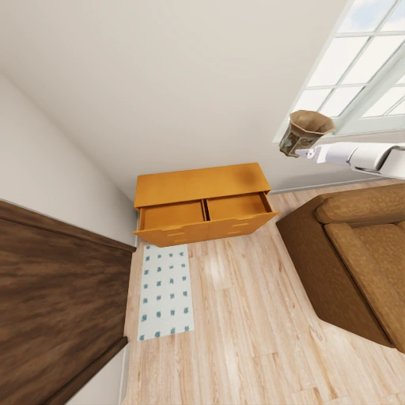
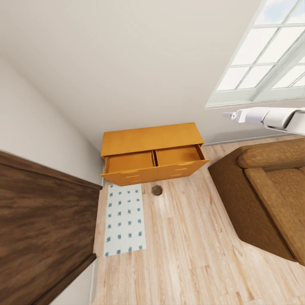
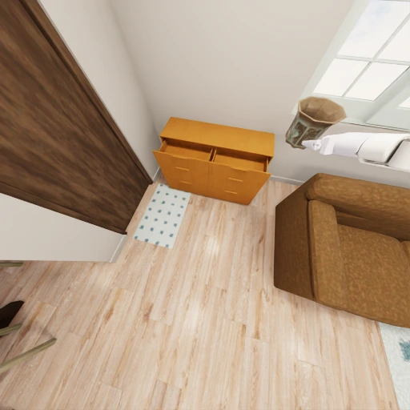

Test the entire execution cycle.
SCOPER-bench brings observation-grounded decomposition, execution and recovery into 870 validated tasks across two simulators. Shared System 1 skills isolate high-level reasoning.
SCOPER.
A plan is only the beginning.
Can an embodied agent discover what matters, verify what happened,
and recover when execution goes wrong?
SCOPER studies embodied System 2 across the full observation–planning–execution–recovery cycle.
Embodied System 2 must acquire missing evidence, decompose goals, select actions and revise plans as execution unfolds. SCOPER studies these coupled abilities through a cross-simulator benchmark of 870 validated tasks and situated questions, with ongoing visual feedback and controlled execution failures. A training-free harness organizes evidence, verifies progress and supports recovery. Comparisons across general-purpose and embodied models highlight the gap between plausible action generation and sustained task completion, while component ablations examine the roles of memory, recovery and anti-deadlock control.
THE CLOSED-LOOP CHALLENGE
The environment changes.
The agent needs to notice.

ACT
DEVIATION
RECOVERWhat an agent sees changes what it should do. What happens after it acts changes what it should do next.
Fixed-video QA cannot test which evidence an agent chooses to acquire. Action sequencing alone cannot test whether it notices failed execution. SCOPER studies these abilities together, using high-level goals, ongoing visual observations and controlled failures.
SCOPER-bench brings observation-grounded decomposition, execution and recovery into 870 validated tasks across two simulators. Shared System 1 skills isolate high-level reasoning.
SCOPER-harness adds evidence memory, a dynamic agenda, progress verification and bounded recovery to the same model backbone—without training or additional privileged simulator information.
Cross-model evaluations reveal failures in evidence retention, execution verification and sustained progress. Harness comparisons and component ablations identify practical ways to improve completion.
Shared rule-based System 1 skills handle search, navigation and manipulation. System 2 decides what to inspect, how to act, and when to revise the plan.
Concrete goals, without a prescribed action sequence. Test decomposition and coordinated execution.
Plan & executeInspect the scene to discover which objects and conditions require attention before choosing actions.
Explore & inferHandle initial anomalies, injected action failures and mid-execution changes using fresh visual evidence.
Verify & recoverCombine subtasks while maintaining progress, remembering evidence and respecting cross-step dependencies.
Coordinate over timeTemplates specify object roles, initial conditions and goals. Compatible scenes are matched and initialized, followed by static checks and privileged teacher execution. Controlled events are validated with recovery enabled. Execution traces support situated QA attachment. Teacher decompositions and privileged simulator state are used for construction and validation, not provided to the evaluated policy.
A training-free harness connects observations to an evolving task agenda. It separates what has been seen from what still needs to be done.
Retain facts, incidents and obligations. Reconcile new observations with existing evidence.
Turn requirements and discoveries into actionable needs. Reopen items when the scene changes.
Compare expected and observed effects. Feed unsuccessful or uncertain outcomes into recovery.
Bound exploration and retries so that checking does not replace task advancement.
Selected examples from the paper. Follow how observations change the next action.
An object drops beside its intended receptacle. The agent must recognize the changed state, reacquire the object and continue toward the goal.
Selected execution frames, grouped by action. Click the figure to inspect details.
Explore the paper’s results across models, task groups and individual templates. All rates are percentages; higher is better. Step counts describe execution length.
GPT-6 Astra success on BEHAVIOR / ProcTHOR.
Success without / with SCOPER-harness.
Success without / with SCOPER-harness.
| Model | Success ↑ | Progress ↑ | Coverage ↑ | QA trigger ↑ | QA accuracy ↑ |
|---|
Progress measures completed goal predicates; coverage measures distinct required actions. QA trigger = triggered / configured questions. QA accuracy = correct / triggered questions, including unanswered triggered questions in the denominator.
WHAT MAKES THE HARNESS WORK?
Qwen3.8-27B. The same environment and task-group filters apply.
| Configuration | Success ↑ | Progress ↑ | Coverage ↑ |
|---|
| Task template | Success / tasks | Success | Progress | Coverage | QA trigger | QA accuracy | Avg. steps |
|---|
Data source. Values reproduce the supplied paper tables and per-template reports. Source records include estimated Gemini, harness and ablation entries, some estimated QA entries, and mixed-protocol baselines; these are not newly verified measurements. Main-table values retain the paper’s displayed precision and grouping; per-template reports may show additional decimals.
Models receive a goal and public interaction tools. They must decide what to inspect, what to do next and whether the task is actually complete.
Task instruction, tool descriptions, permitted object vocabulary, decision history and 512 × 512 RGB observations. Private object IDs, simulator state, teacher plans and answer keys are excluded.
Navigation, scanning and search return eight uniformly sampled execution frames. State-changing actions return before-and-after frames. Direct execution retains up to 32 frames; the harness organizes publicly observed evidence in memory.
The agent must issue stop with all required goal predicates satisfied. Atomic, two-subtask and three-subtask episodes allow 24, 36 and 48 high-level calls, respectively, including QA answers.
Shared rule-based System 1 skills provide observation, A* navigation and state-changing manipulation. Controlled events can alter outcomes. This isolates high-level reasoning rather than evaluating low-level motor control.
About 3,500 attached questions cover the execution cycle. Questions activate on configured actions, steps or milestones; answers are determined from the evaluated episode’s state, not copied from the teacher trace.
Is an object clean, open or activated?
Is an object inside its container or on its intended surface?
Did the preceding action achieve its intended effect?
Which issue or execution discrepancy remains unresolved?
What additional requirement was introduced?
Which task requirement is still unmet?
Which goals hold at this execution point?
Which subtask is active or complete after a handoff?
QA uses dedicated answer-only turns with two to four choices and no additional physical action. Triggered but unanswered questions count as incorrect. Task metrics are weighted by task counts; QA metrics use their own question denominators.
The paper’s trace analysis points to failures in completion assessment, sustained progress and adapting after unsuccessful actions.
Reported over 4,813 failed normal-image episodes from six open-source models. Indicators overlap; they are not mutually exclusive causes and should not be summed.
GPT-6 Astra combines stronger action coverage with reliable tool formatting: only one of its 500 failed episodes ended in a parsing error. Yet 58.6% of its failures exhausted the action budget, motivating more efficient exploration and recovery.
Bound repeated exploration and verification. Removing anti-deadlock control reduces overall success from 43.3% to 25.7% on BEHAVIOR and 32.2% to 20.4% on ProcTHOR.
Memory particularly supports observation-dependent decisions; explicit recovery matters most for anomaly handling. Improvements in completion do not imply uniform gains in QA accuracy.
Examine visual dependence, execution length and decisions on real-world observations.
Replacing observations with black images removes visual evidence while retaining the task and tool interface. Select an environment and task group to inspect the paper’s full blind-image table.
| Model | Success | Progress | Coverage |
|---|
The full blind-image table is estimated in the source records. Separately recorded black-image runs report Qwen3.5-9B success of 12/450 on ProcTHOR and 20/420 on BEHAVIOR, and GPT-6 Astra success of 16/450 and 4/420. These measured aggregate anchors do not establish every per-group entry in the full table.
| Model | ProcTHOR | BEHAVIOR |
|---|---|---|
| GPT-6 Astra | 23.07 | 22.45 |
| Embodied-R1.5 | 12.88 | 14.46 |
| RoboBrain2.5-8B | 10.08 | 12.54 |
| RynnBrain11-9B | 21.88 | 21.21 |
| Molmo2-ER-4B | 18.08 | 18.31 |
| Qwen3.5-9B | 20.06 | 19.45 |
| Qwen3.5-9B + Harness | 22.91 | 22.29 |
| Qwen3.8-27B | 20.68 | 21.68 |
| Qwen3.8-27B + Harness | 22.94 | 22.41 |
Fewer calls are not necessarily better: early termination can reduce length without completing the task. The paper provides nine configurations here; no Gemini step count is inferred.
The protocol covers 200 demonstration episodes: 80 routine, 60 observation-dependent and 60 anomalous or incomplete-action episodes. At each decision node, models predict one next tool call from the instruction, current segment’s head-camera frames and preceding reference actions.
Tool accuracy requires the correct operation. Full-call accuracy also requires every necessary argument. Critical observation and repair nodes are reported separately.
Frames follow a 0.5 FPS sampling grid. Predictions do not control a robot or change subsequent histories. This tests decisions from real imagery, not real-robot closed-loop success.
| Model | Routine tool | Routine call | Observation tool | Observation call | Recovery tool | Recovery call | Critical obs. call | Repair call | Overall tool | Overall call |
|---|---|---|---|---|---|---|---|---|---|---|
| Qwen3.5-9B | 55.8 | 45.0 | 42.8 | 30.3 | 38.2 | 26.4 | 20.0 | 13.3 | 45.6 | 33.9 |
| Qwen3.5-9B + harness | 62.2 | 52.9 | 59.3 | 48.9 | 55.4 | 44.3 | 46.7 | 41.7 | 58.9 | 48.6 |
| Qwen3.8-27B | 63.8 | 54.1 | 52.6 | 41.8 | 49.2 | 37.0 | 28.9 | 23.3 | 55.2 | 44.3 |
| Qwen3.8-27B + harness | 73.8 | 64.8 | 68.8 | 60.0 | 65.0 | 54.4 | 56.7 | 51.7 | 69.1 | 59.6 |
| Embodied-R1.5 | 55.4 | 45.4 | 44.3 | 31.7 | 40.4 | 28.3 | 22.2 | 20.0 | 46.7 | 35.1 |
| RoboBrain2.5-8B | 51.9 | 40.8 | 38.1 | 26.0 | 35.4 | 22.7 | 16.7 | 13.3 | 41.8 | 29.8 |
| RynnBrain11-9B | 52.2 | 42.0 | 41.0 | 28.1 | 35.7 | 23.5 | 20.0 | 15.0 | 42.9 | 31.1 |
| Molmo2-ER-4B | 49.6 | 36.4 | 37.9 | 25.4 | 34.5 | 21.3 | 15.6 | 11.7 | 40.7 | 27.7 |
| GPT-6 Astra | 86.8 | 79.6 | 78.2 | 69.4 | 73.8 | 63.5 | 64.4 | 56.7 | 79.5 | 70.8 |
These values reproduce the paper; the underlying AgiBot result files are explicitly estimated, rather than verified per-node model measurements. Demonstration images illustrate the protocol and are not model-predicted robot executions.
All nine simulation examples, including multi-page traces, and both real-observation figures. Open any image for detail or download its paper-resolution PDF.
Two locally available recordings matched to the selected demonstration episodes. These videos illustrate task execution; they are not a verification of a particular evaluated model’s predictions.
No. Privileged bindings and reference decompositions support construction and scoring. The evaluated policy receives instructions, permitted vocabulary, history and visual observations.
Different execution paths reach different question triggers. High accuracy on a small triggered subset cannot be interpreted as understanding the entire task. Both denominators matter.
No. The comparisons use the same Qwen backbone with training-free memory, agenda management, verification and recovery. The harness makes additional inference calls, so gains should not be read as equal-compute comparisons.
Rule-based manipulation abstracts away low-level physical control. Simulation results do not establish real-robot execution performance. The AgiBot protocol uses fixed reference histories and cannot assess consequences of the agent’s own actions.
The reported bank has 450 ProcTHOR and 420 BEHAVIOR episodes. Each backend includes 50 two-subtask and 50 three-subtask composites. Tables retain their source grouping (routine/observation/failure/composite: 130/90/130/100 for ProcTHOR and 100/90/130/100 for BEHAVIOR). The appendix uses a different semantic grouping; scores here are not regrouped. The newer container-inspection description should not be read as a newly measured score for the legacy native-QA template.
Download the result tables, browse every reported template, or inspect the full-resolution figures.
The catalog documents reported task coverage; it is not an executable task-bank download. Packaged CSVs retain their original provenance fields.